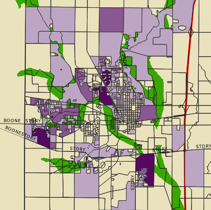
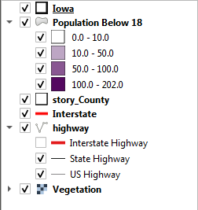

Map bellow shows the distribution of the population bellow 18 in Ames, Iowa.
The proportion of vegetation in compare to the childeren population should be kept in planning decisions to keep the city of Ames a liveable place for the next generations!

